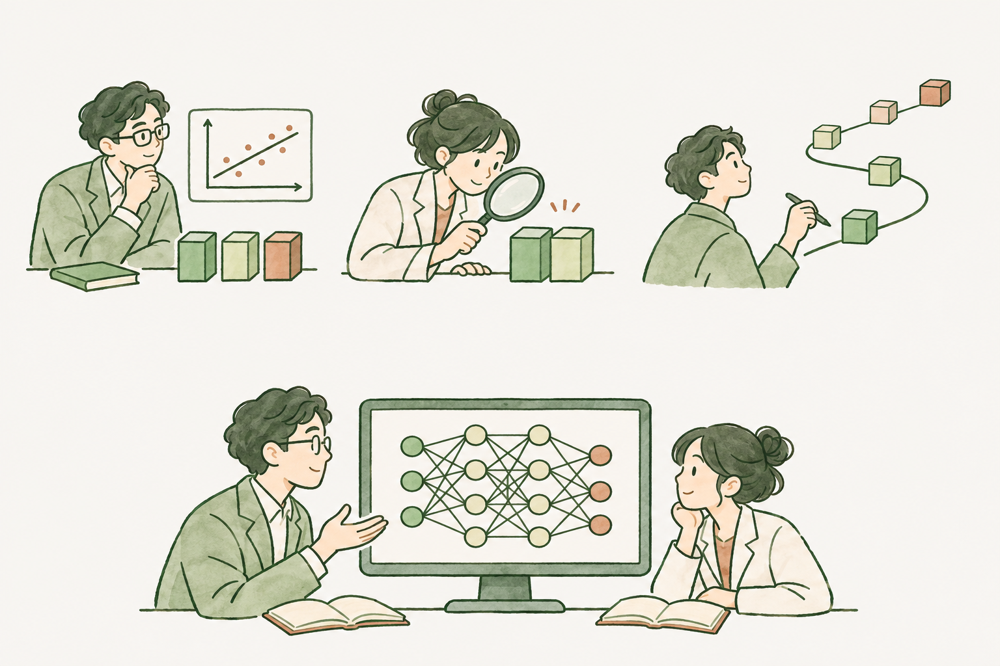

ADAPTIVE FEATURE · RESEARCH PROGRAM
Learning features.
Understanding generalization.
Study learning dynamics through abstract feature-map regression, then use concrete neural networks to test and refine the assumptions.
The strategy
Three complementary analytical views, connected to concrete neural networks.

A family of abstract feature-map regressions

Static
Representation quality and risk
Local
Feature changes and coupling
Global
Feature formation and persistence
↓ Apply and compare↑ Network feedback refines assumptions
Neural networks
Test the theory in concrete networks and bring feedback to the feature-map family.
The goal is to connect neural-network dynamics with generalization; individual results remain specific to their models and assumptions.
Explore the program
University profileqianlin [at] tsinghua [dot] edu [dot] cn